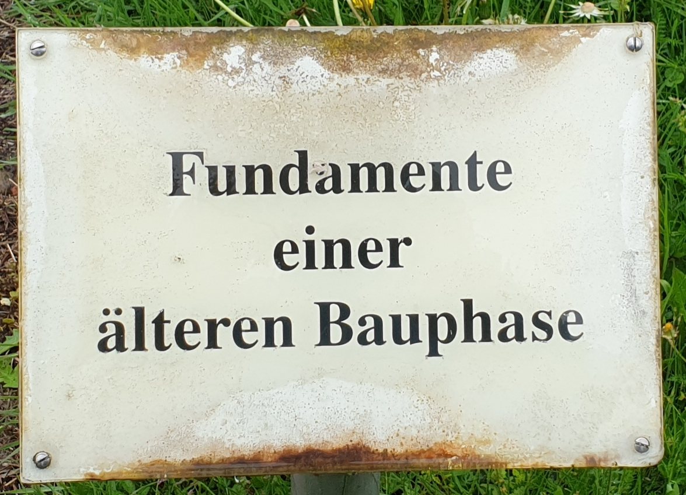

Kultur soll ja heute auch nicht fehlen!
Start mit dem Gesicht zu diesem Schild:
Vor welchem Schild (gemeint ist das Schild mit dem Gebäudeteil) stehst du?
Wie viele Kilometer sind es mit dem Fahrrad nach Reinheim?
Wer findet heraus, welche Vögel in den letzten Tagen hier in der Gegend gesichtet wurden?